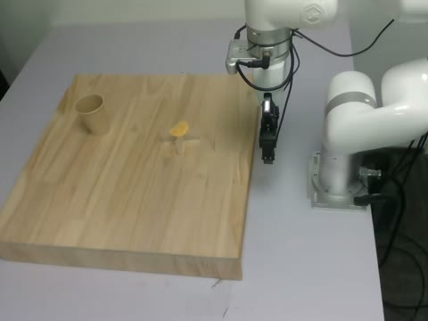

VeriGen


World model
Video expertTactile expert
joint attentionScaling visuo-tactile policy learning is constrained by the high cost of real-world data collection and the difficulty of building realistic simulations. Generative models offer a scalable source of training data, yet useful demonstrations require plausible tactile feedback, temporal alignment with visual contact, and accurate actions. To this end, we present VeriTouch, a framework for generating and verifying synthetic visuo-tactile trajectories for policy learning. Conditioned on initial images and task instructions, our world model, VeriGen, jointly generates high-fidelity dual-view videos and realistic tactile sequences over complete manipulation trajectories. By integrating a dedicated tactile expert with a pretrained video model, it captures realistic visual details and tactile deformation dynamics through joint visuo-tactile modeling. Our multimodal verifier VeriEval then checks visual quality while focusing on tactile reliability, assessing tactile realism, contact-force plausibility, and temporal alignment between visible contact and tactile signals, thereby directly filtering out unreliable sequences. Finally, our inverse dynamics model, VeriIDM, combines global scene information from both camera views with fine-grained gripper details and motion across neighboring frames to extract actions from verified videos. Experiments on five real-world tasks show that synthetic data improves all four evaluated policies, with further scaling synthetic trajectories substantially boosting policy performance without additional real-world data collection.

“Gripper fingers clip into the power strip during the grasp.”
@misc{wang2026veritouchverifiedvisuotactileworld,
title={VeriTouch: Verified Visuo-Tactile World Models that Improve Robot Policy Learning},
author={Shuxun Wang and Xiaonan Jiang and Zhaoyu Wang and Ziyuan Chu and Xihang Yue and Pengfei Liu and Haodong Zhu and Shiqi Liu and Mingzhi Zheng and Liang Su and Linchao Zhu},
year={2026},
eprint={2611.30572},
archivePrefix={arXiv},
primaryClass={cs.RO},
url={https://arxiv.org/abs/2611.30572},
}